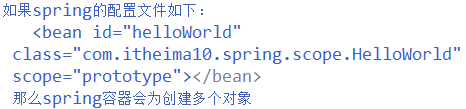

单例多例
spring容器中的对象是单例还是多例取决于scope属性。
查看方式：获取两次，查看对象的内存地址。或者看构造函数的执行的次数。
该容器的 bean默认的是单例。如果一个类放入到容器中，并且该类是单例的，那么，该类中的属性（成员变量）将会成为共享的，有线程安全问题。一般情况下，不把一个数据声明为该类的属性（成员变量）。
通过配置文件， scope属性赋值为：singleton/prototype，单例 /多例。（是对一个bean而言）

创建对象的时机
默认：启动容器， -----》自动查询bean，创建对象 -----》对象调用方法。
也就是说，默认的启动容器的时候，就会创建 bean，在客户端要使用的时候，才会给客户。
修改创建时机：懒加载，延迟。在使用 getbean（）的时候才会创建bean
启动 ---》调用对象------》创建对象。
该情况下，启动容器的时候，不会产生 bean，只有客户端需要的时候也就是用到的时候，才会给予该 bean。
方式一和方式二各有千秋，如果一个 bean存放了大量的数据，就不能使用方式一。因此全部存放到内存不好。
方式二， bean的产生会滞后，不能够及早的发现错误。
如果把lazy-init设置为true，则当spring容器启动的时候，检测不到任何错误，这样会存在很大的安全性隐患，所以一般情况下应该设置lazy-init为default/false。但是如果一个bean中有一个属性，该属性含有大量的数据，这个时候不希望该bean过早的停留在内存中。
这个时候需要用到lazy-init为true。
注：
如果一个 bean，不是单例，也就是说是多例的。那么不管怎么样配置，都是在 getbean的时候，才会创建对象，因此容器启动的时候，只创建一次。（这是对于一个 bean而言的，这个是前提。）那么只对应该 bean只有有一个实例，因此，为了获得多例，那么每一次 getbean（）的时候，都会产生该 bean对应的实例，也就是完成了多例的创建。
图解：

注意，装配，也就是依赖注入，是在init方法之前进行的。
init方法&destroy 方法

执行顺序：
启动容器，
默认容器启动的时候容器创建对象，
调用init 方法，
执行客户端调用的方法。
容器关闭，调用dstory方法。（前提条件，单例下，才可以调用 destory，多例情况下，不负责bean的销毁。）

在spring容器中，对于多例，只负责创建，不负责销毁， struts2的action 由spring创建，但是销毁由 struts2负责销毁。对于单例，负责创建，以及销毁。